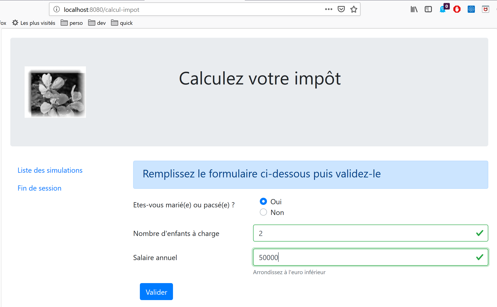
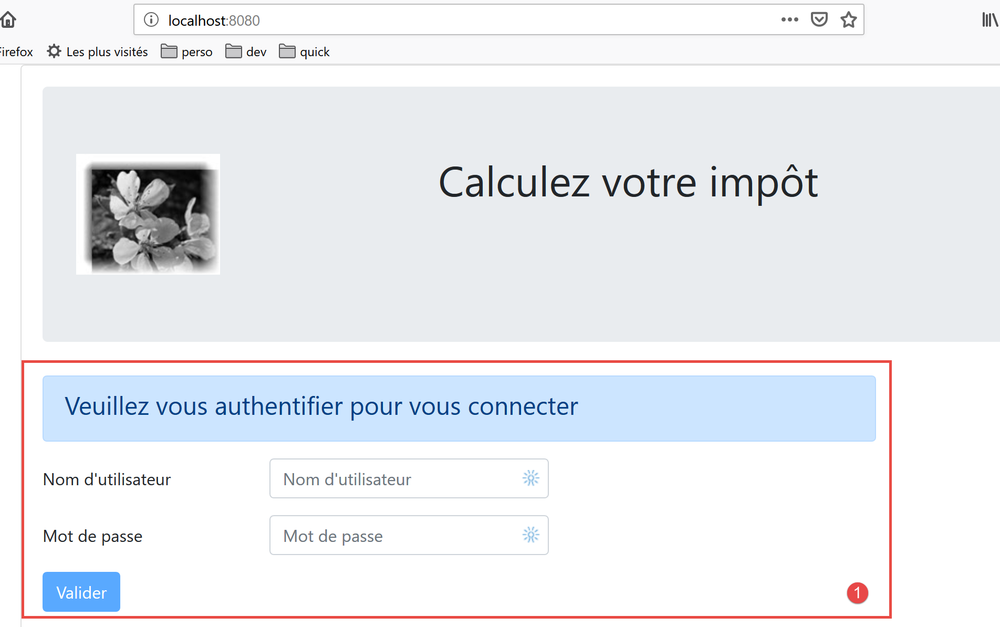
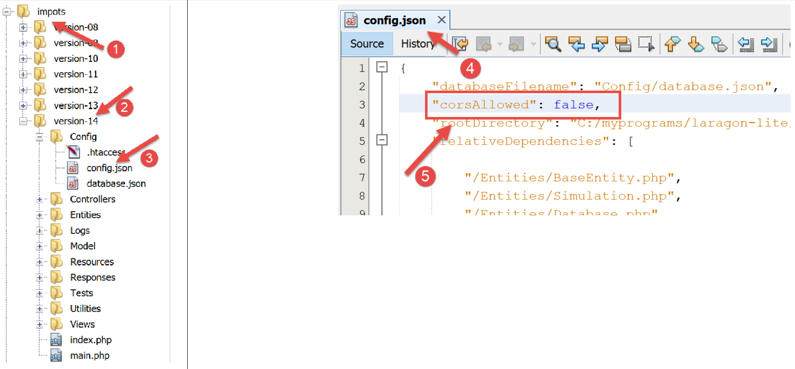
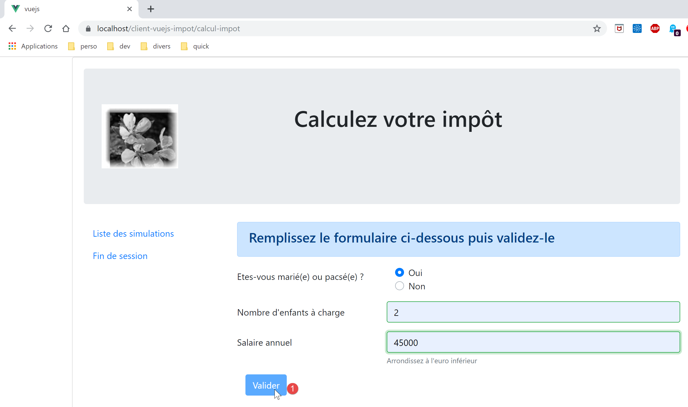
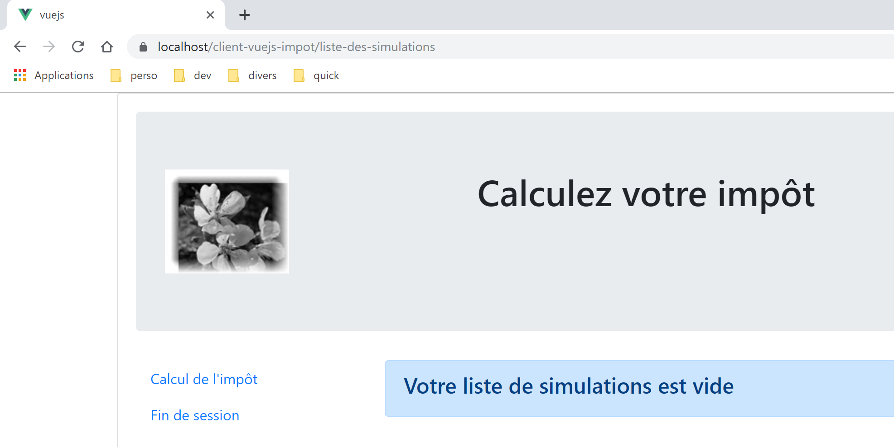

18. عميل Vue.js لخادم حساب الضرائب
18.1. Architecture
سنقوم بتنفيذ تطبيق عميل/خادم بالبنية التالية:

سيكون خادم حساب الضرائب هو الإصدار 14 الذي تم تطويره في المستند |https://tahe.developpez.com/tutoriels-cours/php7|
18.2. طرق عرض التطبيق
طرق عرض تطبيق [vuejs-10] هي نفسها الموجودة في الإصدار 13 من المستند |https://tahe.developpez.com/tutoriels-cours/php7| الخاص بخادم حساب الضرائب عند استخدامه في الوضع HTML. ولكن في هذا التطبيق، سيتم إنشاء هذه العروض بواسطة عميل جافا سكريبت وليس بواسطة الخادم PHP.
الطريقة الأولى هي طريقة المصادقة:

الطريقة الثانية هي طريقة حساب الضريبة:

الصفحة الثالثة هي التي تعرض قائمة عمليات المحاكاة التي أجراها المستخدم:

تُظهر الشاشة أعلاه أنه يمكن حذف المحاكاة رقم 1. وعندها نحصل على الشاشة التالية:

وإذا قمنا الآن بحذف المحاكاة الأخيرة، فسنحصل على العرض الجديد التالي:

18.3. عناصر المشروع [vuejs-20]
هيكل المشروع [vuejs-20] هو كما يلي:

عناصر المشروع هي كما يلي:
- [assets/logo.jpg]: شعار المشروع؛
- [couches]: طبقات التطبيق [métier] و [dao]؛
- [plugins]: المكونات الإضافية للتطبيق؛
- [views]: طرق عرض التطبيق؛
- [config.js]: تهيئة التطبيق؛
- [router.js]: يحدد مسارات التطبيق؛
- [store.js]: متجر [Vuex]؛
- [main.js]: البرنامج النصي الرئيسي للتطبيق؛
18.3.1. الطبقات [métier] و [dao]
18.3.1.1. الطبقة [dao]
يتم تنفيذ الطبقة [dao] بواسطة الفئة [Dao] الواردة في الفقرة |vuejs-10|
18.3.1.2. الطبقة [métier]
يتم تنفيذ الطبقة [métier] بواسطة الفئة [Métier] الواردة في المستند |https://tahe.developpez.com/tutoriels-cours/php7|. وقد تمت إضافة الطريقة [setTaxAdminData] التالية إليها:
// المنشئ
constructor(taxAdmindata) {
// this.taxAdminData: بيانات مصلحة الضرائب
this.taxAdminData = taxAdmindata;
}
// المُعيّن
setTaxAdminData(taxAdmindata) {
// this.taxAdminData: بيانات مصلحة الضرائب
this.taxAdminData = taxAdmindata;
}
تقوم الطريقة [setTaxAdminData] بنفس وظيفة المنشئ. ويتيح وجودها تنفيذ التسلسل التالي:
- إنشاء مثيل للفئة [Métier] باستخدام الأمر [métier=new Métier()] عندما نرغب في إنشاء مثيل للفئة ولكن لا تتوفر لدينا بعد البيانات [taxAdminData]؛
- ثم ملء خاصيتها [taxAdminData] لاحقًا بواسطة عملية [métier.setTaxAdminData(taxAdmindata)]؛
18.3.2. ملف التكوين [config]
ملف [config.js] هو كما يلي:
// استخدام مكتبة [axios]
const axios = require('axios');
// مهلة انتظار الطلبات HTTP
axios.defaults.timeout = 2000;
// قاعدة بيانات خادم حساب الضرائب URL
// يواجه Firefox مشاكل مع مخطط [https] لأن خادم حساب
// الضرائب شهادة موقعة ذاتيًا. يعمل بشكل جيد مع Chrome وEdge. لم يتم اختبار Safari.
axios.defaults.baseURL = 'https://localhost/php7/scripts-web/impots/version-14';
// سنستخدم ملفات تعريف الارتباط
axios.defaults.withCredentials = true;
// تصدير الإعدادات
export default {
axios: axios
}
هذه التهيئة هي تهيئة المكتبة [axios] التي تستخدمها الطبقة [dao] لإجراء استعلاماتها HTTP. تجدر الإشارة في السطر 8 إلى أن الخادم يعمل على منفذ آمن [https].
18.3.3. المكونات الإضافية
تهدف المكونات الإضافية [pluginDao, pluginMétier, pluginConfig] إلى إنشاء ثلاث خصائص جديدة للدالة/الفئة [Vue]:
- [$dao]: ستكون قيمتها مثيلًا للفئة [Dao]؛
- [$métier]: ستكون قيمتها مثيلًا للفئة [Métier]؛
- [$config]: ستكون قيمته الكائن الذي تم تصديره بواسطة ملف التكوين [config]؛
[pluginDao]
export default {
install(Vue, dao) {
// إضافة خاصية [$dao] إلى فئة Vue
Object.defineProperty(Vue.prototype, '$dao', {
// عند الإشارة إلى Vue.$dao، يتم عرض المعلمة الثانية [dao]
get: () => dao,
})
}
}
[pluginMétier]
export default {
install(Vue, métier) {
// يضيف خاصية [$métier] إلى فئة Vue
Object.defineProperty(Vue.prototype, '$métier', {
// عند الإشارة إلى Vue.$métier، يتم عرض المعلمة الثانية [métier]
get: () => métier,
})
}
}
[pluginConfig]
export default {
install(Vue, config) {
// تضيف خاصية [$config] إلى فئة Vue
Object.defineProperty(Vue.prototype, '$config', {
// عند الإشارة إلى Vue.$config، يتم عرض المعلمة الثانية [config]
get: () => config,
})
}
}
18.3.4. المخزن [Vuex]
يتم تنفيذ ستارة [Vuex] بواسطة الملف [store] التالي:
// مكوّن Vuex الإضافي
import Vue from 'vue'
import Vuex from 'vuex'
Vue.use(Vuex);
// مخزن Vuex
const store = new Vuex.Store({
state: {
// جدول عمليات المحاكاة
simulations: [],
// رقم آخر محاكاة
idSimulation: 0
},
mutations: {
// حذف السطر رقم الفهرس
deleteSimulation(state, index) {
// eslint-disable-next-line no-console
console.log("mutation deleteSimulation");
// يتم حذف السطر رقم [index]
state.simulations.splice(index, 1);
// eslint-disable-next-line no-console
console.log("store simulations", state.simulations);
},
// إضافة محاكاة
addSimulation(state, simulation) {
// eslint-disable-next-line no-console
console.log("mutation addSimulation");
// رقم المحاكاة
state.idSimulation++;
simulation.id = state.idSimulation;
// إضافة المحاكاة إلى جدول المحاكاة
state.simulations.push(simulation);
},
// تنظيف الحالة
clear(state) {
state.simulations = [];
state.idSimulation = 1;
}
}
});
// تصدير الكائن [store]
export default store;
تعليقات
- الأسطر 2-4: تم دمج المكون الإضافي [Vuex] في إطار العمل [Vue]؛
- الأسطر 8-13: نضع العناصر التالية في مخزن [Vuex]:
- [simulations]: قائمة عمليات المحاكاة التي أجراها المستخدم؛
- [idSimulation]: رقم آخر محاكاة أجراها المستخدم؛
تجدر الإشارة إلى أن المخزن سيتم مشاركته بين العروض وأن محتواه تفاعلي: فعند تعديله، يتم تحديث العروض التي تستخدمه تلقائيًا. في تطبيقنا، العنصر [simulations] هو الوحيد الذي يحتاج إلى أن يكون تفاعليًا، وليس العنصر [idSimulation]. وقد تم ترك هذا العنصر في المخزن لتسهيل الأمر؛
- الأسطر 14-40: التعديلات المسموح بها على الكائن [state] الوارد في الأسطر 8-13. نذكر أن هذه التعديلات تتلقى دائمًا الكائن [state] الوارد في الأسطر 8-13 كمعلمة أولى؛
- السطر 16: يسمح التغيير [deleteSimulation] بحذف محاكاة تحمل الرقم [index]؛
- السطر 25: تتيح عملية التغيير [addSimulation] إضافة محاكاة جديدة إلى جدول المحاكاة؛
- السطر 35: يسمح التعديل [clear] بإعادة تعيين الكائن [state] للسطور من 8 إلى 13؛
18.3.5. ملف التوجيه [router]
ملف التوجيه هو كما يلي:
// عمليات الاستيراد
import Vue from 'vue'
import VueRouter from 'vue-router'
// طرق العرض
import Authentification from './views/Authentification'
import CalculImpot from './views/CalculImpot'
import ListeSimulations from './views/ListeSimulations'
// مكوّن إضافي للتوجيه
Vue.use(VueRouter)
// مسارات التطبيق
const routes = [
// المصادقة
{
path: '/', name: 'authentification', component: Authentification
},
// حساب الضريبة
{
path: '/calcul-impot', name: 'calculImpot', component: CalculImpot
},
// قائمة عمليات المحاكاة
{
path: '/liste-des-simulations', name: 'listeSimulations', component: ListeSimulations
},
// إنهاء الجلسة
{
path: '/fin-session', name: 'finSession', component: Authentification
}
]
// الموجه
const router = new VueRouter({
// الطرق
routes,
// طريقة عرض المسارات في المتصفح
mode: 'history',
})
// تصدير جهاز التوجيه
export default router
تعليقات
- السطر 16: عند بدء تشغيل التطبيق، يتم عرض العرض [Authentification] لأن ملفه URL هو الجذر [/]؛
- السطر 20: يتم عرض العرض [CalculImpot] عند طلب العرض URL [/calcul-impot]؛
- السطر 24: يتم عرض العرض [ListeSimulations] عند طلب العرض URL أو [/liste-des-simualtions]؛
- السطر 28: يتم عرض العرض [Authentification] عند طلب العرض URL [/fin-session]؛
- الأسطر 33-38: يتم إنشاء كائن [router] باستخدام هذه المسارات (السطر 35) ووضع [history] (السطر 37) لإدارة URL؛
- السطر 41: يتم تصدير هذا الموجه؛
18.3.6. النص البرمجي الرئيسي [main.js]
النص البرمجي [main.js] هو كما يلي:
// عمليات الاستيراد
import Vue from 'vue'
// الصفحة الرئيسية
import Main from './views/Main.vue'
// المكوّن الإضافي [bootstrap-vue]
import BootstrapVue from 'bootstrap-vue'
Vue.use(BootstrapVue);
// CSS بوتستراب
import 'bootstrap/dist/css/bootstrap.css'
import 'bootstrap-vue/dist/bootstrap-vue.css'
// الموجه
import router from './router'
// المكوّن الإضافي [config]
import config from './config';
import pluginConfig from './plugins/pluginConfig'
Vue.use(pluginConfig, config)
// إنشاء مثيل الطبقة [dao]
import Dao from './couches/Dao';
const dao = new Dao(config.axios);
// المكوّن الإضافي [dao]
import pluginDao from './plugins/pluginDao'
Vue.use(pluginDao, dao)
// إنشاء مثيل الطبقة [métier]
import Métier from './couches/Métier';
const métier = new Métier();
// المكون الإضافي [métier]
import pluginMétier from './plugins/pluginMétier'
Vue.use(pluginMétier, métier)
// مخزن Vuex
import store from './store'
// تشغيل تطبيق UI
new Vue({
el: '#التطبيق،
// جهاز التوجيه
router: router,
// ستارة Vuex
store: store,
// الواجهة الرئيسية
render: h => h(Main),
})
تجدر الإشارة إلى النقاط التالية:
- السطور 18-21، سيكون الكائن الذي تم تصديره بواسطة البرنامج النصي [./config] متاحًا في السمة [Vue.$config]، وبالتالي متاحًا لجميع طرق عرض التطبيق. لم يكن ذلك ضروريًا هنا لأن الكائن [config] لا يستخدم إلا من قبل البرنامج النصي [main] (السطر 25). ومع ذلك، غالبًا ما تكون التهيئة ضرورية لعدة طرق عرض. لذا أردنا هنا الحفاظ على مبدأ إتاحتها في سمة لطريقة العرض؛
- السطران 24-25: إنشاء مثيل للطبقة [dao]. يتم استيراد الفئة [Dao] في السطر 24 ثم يتم إنشاء مثيل لها في السطر 25. يقبل منشئها كمعلمة وحيدة الكائن [axios]، وهو خاصية التكوين؛
- السطران 27-29: يتم إتاحة الطبقة [dao] في السمة [$dao] لجميع العروض؛
- الأسطر 31-37: يتم تكرار التسلسل نفسه للطبقة [métier]. ويستقبل مُنشئ الفئة [Métier] المعلمة [taxAdminData] التي تمثل بيانات مصلحة الضرائب. لا تتوفر لدينا هذه البيانات بعد. لذا، سيتعين استكمال الكائن [métier] الوارد في السطر 33 لاحقًا؛
- السطر 40: يتم استيراد مخزن البيانات [Vuex]؛
- الأسطر 43-51: يتم إنشاء مثيل للعرض الرئيسي [Main] (السطران 5 و50)، مع تمرير معلمتين إليه:
- السطر 46: يتم تعريف جهاز التوجيه [router] في السطر 16؛
- السطر 48: يتم تعريف المتجر [Vuex] [store] في السطر 40؛
- في كلتا الحالتين، يظهر اسم الخاصية على اليسار وقيمتها على اليمين. يتم تحديد أسماء الخصائص [router, store] بواسطة أطر العمل [vue-router] و [vuex]. أما القيم المرتبطة بها فيمكن أن تكون أي قيم؛
18.4. طرق عرض التطبيق
18.4.1. الطريقة الرئيسية [Main]
فيما يلي كود العرض الرئيسي [Main]:
<!-- تعريف HTML للواجهة -->
<template>
<div class="container">
<b-card>
<!-- شاشة العرض العملاقة -->
<b-jumbotron>
<b-row>
<b-col cols="4">
<img src="../assets/logo.jpg" alt="Cerisier en fleurs" />
</b-col>
<b-col cols="8">
<h1>Calculez votre impôt</h1>
</b-col>
</b-row>
</b-jumbotron>
<!-- خطأ في الاستعلام HTTP -->
<b-alert
show
variant="danger"
v-if="showError"
>L'erreur suivante s'est produite : {{error.message}}</b-alert>
<!-- الطريقة الحالية -->
<router-view v-if="showView" @loading="mShowLoading" @error="mShowError" />
<!-- جاري التحميل -->
<b-alert show v-if="showLoading" variant="light">
<strong>Requête au serveur de calcul d'impôt en cours...</strong>
<div class="spinner-border ml-auto" role="status" aria-hidden="true"></div>
</b-alert>
</b-card>
</div>
</template>
<script>
export default {
// الاسم
name: "app",
// الحالة الداخلية
data() {
return {
// التحكم في تنبيه الانتظار
showLoading: false,
// التحكم في تنبيه الخطأ
showError: false,
// التحكم في عرض طريقة التوجيه الحالية
showView: true,
// رسالة خطأ
error: ""
};
},
// معالجات الأحداث
methods: {
// خطأ في الطلب غير المتزامن
mShowError(error) {
// eslint-disable-next-line
console.log("Main evt error");
// يتم عرض رسالة الخطأ
this.error = error;
this.showError = true;
// إخفاء العرض الموجه
this.showView = false;
// إخفاء رسالة الانتظار
this.showLoading = false;
},
// عرض رمز الانتظار أو عدم عرضه
mShowLoading(value) {
// eslint-disable-next-line
console.log("Main evt showLoading");
// عرض أو عدم عرض تنبيه الانتظار
this.showLoading = value;
}
}
};
</script>
تعليقات
- تضمن طريقة العرض [Main] تخطيط طريقة العرض التي تم توجيهها وعرضها في السطر 23:

- تعرض الأسطر من 5 إلى 15 المنطقة 1؛
- السطر 23 يعرض العرض الموجه [2]؛
- الأسطر 16-19: تنبيه يُعرض فقط في حالة حدوث خطأ في الاتصال بخادم حساب الضريبة؛
- الأسطر 25-28: رسالة انتظار تُعرض عند كل طلب HTTP يتم إرساله إلى الخادم؛
- سيتم عرض جميع العروض بهذا التخطيط حيث يتم عرض كل عرض موجه عبر الأسطر 20-24. يُستخدم العرض [Main] لتجميع العناصر التي يمكن مشاركتها بين العروض المختلفة؛
- السطر 23: يمكن لكل عرض موجه إصدار ثلاثة أحداث:
- [loading]: تم إطلاق استعلام HTTP. يجب عرض رسالة انتظار الرد؛
- [error]: انتهى الطلب HTTP بخطأ. يجب عرض رسالة الخطأ وإخفاء العرض الموجه؛
- الأسطر 38-49: حالة العرض:
- السطر 41: يتحكم [showLoading] في عرض رسالة انتظار انتهاء الطلب HTTP (السطر 25)؛
- السطر 43: يتحكم [showError] في عرض رسالة الخطأ الخاصة بالطلب HTTP (الأسطر 17-21)؛
- السطر 45: تتحكم [showView] في عرض طريقة العرض الموجهة (السطر 23)؛
- الأسطر 53-63: تتولى الطريقة [mShowError] إدارة الحدث [error] الصادر عن العرض الموجه (السطر 23)؛
- الأسطر 65-70: تعالج الطريقة [mShowLoading] الحدث [loading] الصادر عن العرض الموجه (السطر 23)؛
- السطر 23: يجب الانتباه إلى الحدثين [error] و [loading]. لا يتم اعتراضهما إلا إذا تم عرض العرض الموجه [showView=true]. ولهذا السبب يتم عرض العرض الموجه في البداية (السطر 45). ولا يتم إخفاؤها إلا في حالة حدوث خطأ (السطر 60). لتجنب هذه المشكلة، كان من الممكن استخدام التوجيه [v-show] بدلاً من [v-if]. والفرق بين هذين التوجيهين هو التالي:
- تقوم التوجيهية [v-if=’false’] بإخفاء الكتلة الخاضعة للتحكم عن طريق إزالتها من الكود الشامل HTML. وبذلك، لا يمكن اعتراض أحداث العرض الموجه بعد ذلك؛
- [v-show=’false’] يخفي الكتلة الخاضعة للتحكم من خلال التعديل على CSS الخاص بها، لكن كود الكتلة يظل موجودًا في HTML الشامل، وبالتالي يمكنه اعتراض أحداث العرض الموجه؛
18.4.2. عرض التخطيط [Layout]
كود العرض [Layout] هو كما يلي:
<!-- تعريف HTML لتخطيط العرض الموجه -->
<template>
<!-- السطر -->
<div>
<b-row>
<!-- منطقة مكونة من ثلاثة أعمدة على اليسار -->
<b-col cols="3" v-if="left">
<slot name="left" />
</b-col>
<!-- منطقة مكونة من تسعة أعمدة على اليمين -->
<b-col cols="9" v-if="right">
<slot name="right" />
</b-col>
</b-row>
</div>
</template>
<script>
export default {
// معلمات العرض
props: {
// يتحكم في العمود الأيسر
left: {
type: Boolean
},
// التحكم في العمود الأيمن
right: {
type: Boolean
}
}
};
</script>
تعليقات
- تسمح طريقة العرض [Layout] بتقسيم طريقة العرض الموجهة إلى منطقتين:
- منطقة مكونة من 3 أعمدة Bootstrap على اليسار (الأسطر 7-9). ستحتوي هذه المنطقة على قائمة التنقل في حالة وجودها؛
- منطقة مكونة من 9 أعمدة على اليمين (الأسطر 11-13). ستستضيف هذه المنطقة المعلومات التي تجلبها طريقة العرض الموجهة؛
18.4.3. الطريقة [Authentification]
طريقة عرض المصادقة هي كما يلي:

يتم الحصول على هذا العرض من [Layout] بحذف العمود الأيسر لعرض العمود الأيمن فقط.
ورمزها هو كما يلي:
<!-- تعريف HTML للعرض -->
<template>
<Layout :left="false" :right="true">
<template slot="right">
<!-- نموذج HTML - يتم إرسال قيمه باستخدام الإجراء [authentifier-utilisateur] -->
<b-form @submit.prevent="login">
<!-- العنوان -->
<b-alert show variant="primary">
<h4>Bienvenue. Veuillez vous authentifier pour vous connecter</h4>
</b-alert>
<!-- السطر الأول -->
<b-form-group label="Nom d'utilisateur" label-for="user" label-cols="3">
<!-- منطقة إدخال المستخدم -->
<b-col cols="6">
<b-form-input type="text" id="user" placeholder="Nom d'utilisateur" v-model="user" />
</b-col>
</b-form-group>
<!-- السطر الثاني -->
<b-form-group label="Mot de passe" label-for="password" label-cols="3">
<!-- حقل إدخال كلمة المرور -->
<b-col cols="6">
<b-input type="password" id="password" placeholder="Mot de passe" v-model="password" />
</b-col>
</b-form-group>
<!-- السطر الثالث -->
<b-alert
show
variant="danger"
v-if="showError"
class="mt-3"
>L'erreur suivante s'est produite : {{message}}</b-alert>
<!-- زر من النوع [submit] في السطر الثالث -->
<b-row>
<b-col cols="2">
<b-button variant="primary" type="submit" :disabled="!valid">Valider</b-button>
</b-col>
</b-row>
</b-form>
</template>
</Layout>
</template>
<!-- ديناميكية العرض -->
<script>
import Layout from "./Layout";
export default {
// حالة المكون
data() {
return {
// المستخدم
user: "",
// كلمة المرور الخاصة به
password: "",
// التحكم في عرض رسالة الخطأ
showError: false,
// رسالة الخطأ
message: "",
// بدء الجلسة
sessionStarted: false
};
},
// المكونات المستخدمة
components: {
Layout
},
// الخصائص المحسوبة
computed: {
// البيانات الصحيحة
valid() {
return this.user && this.password && this.sessionStarted;
}
},
// معالجات الأحداث
methods: {
// ----------- المصادقة
async login() {
try {
// بدء الانتظار
this.$emit("loading", true);
// المصادقة المعطلة لدى الخادم
const response = await this.$dao.authentifierUtilisateur(
this.user,
this.password
);
// نهاية التحميل
this.$emit("loading", false);
// تحليل الاستجابة
if (response.état != 200) {
// يتم عرض الخطأ
this.message = response.réponse;
this.showError = true;
return;
}
// لا توجد أخطاء
this.showError = false;
// --------- يتم الآن طلب البيانات من مصلحة الضرائب
// بدء الانتظار
this.$emit("loading", true);
// طلب معلق لدى الخادم
const response2 = await this.$dao.getAdminData();
// نهاية التحميل
this.$emit("loading", false);
// تحليل الرد
if (response2.état != 1000) {
// يتم عرض الخطأ
this.message = response2.réponse;
this.showError = true;
return;
}
// لا توجد أخطاء
this.showError = false;
// يتم تخزين البيانات المستلمة في الطبقة [métier]
this.$métier.setTaxAdminData(response2.réponse);
// الانتقال إلى شاشة حساب الضريبة
this.$router.push({ name: "calculImpot" });
} catch (error) {
// يتم إحالة الخطأ إلى المكون الرئيسي
this.$emit("error", error);
}
}
},
// دورة الحياة: تم إنشاء المكون للتو
created() {
// eslint-disable-next-line
console.log("authentification", "created");
// يتم بدء جلسة jSON مع الخادم
// بدء الانتظار
this.$emit("loading", true);
// يتم تهيئة الجلسة مع الخادم - طلب غير متزامن
// يتم استخدام الوعد الذي تم إرجاعه بواسطة طرق طبقة [dao]
this.$dao
// يتم تهيئة جلسة عمل jSON
.initSession()
// تم الحصول على الرد
.then(response => {
// انتهى الانتظار
this.$emit("loading", false);
// تحليل الرد
if (response.état != 700) {
// يتم عرض الخطأ
this.message = response.réponse;
this.showError = true;
return;
}
// بدأت الجلسة
this.sessionStarted = true;
})
// في حالة حدوث خطأ
.catch(error => {
// يتم رفع الخطأ إلى العرض [Main]
this.$emit("error", error);
});
}
};
</script>
تعليقات
- السطر 3: تستخدم طريقة العرض [Authentification] العمود الأيمن فقط من [Layout] (السطران 3 و4)؛
- الأسطر 6-38: نموذج Bootstrap الذي يُنشئ المنطقة 1 في لقطة الشاشة أعلاه؛
- السطر 6: يحدث الحدث [@submit] عندما ينقر المستخدم على الزر من النوع [submit] الموجود في السطر 35. يطلب المُعدِّل [prevent] عدم إعادة تحميل الصفحة عند حدوث [submit]. كان من الممكن أيضًا كتابة:
- علامة <b-form> بدون معالجة الحدث [submit]؛
- علامة <b-button> مع الحدث [@click=’login’] وبدون السمة [type=’submit’]؛
وهذا يعمل أيضًا. وتتمثل ميزة الحل الذي تم اختياره في أن عملية الإرسال تتم ليس فقط بالنقر على الزر [Valider]، بل أيضًا عند التحقق من صحة البيانات (مفتاح [Entrée]) في حقول الإدخال. لذلك، تم اختيار الحل [<b-form @submit.prevent="login">] هنا لتسهيل الأمر على المستخدم؛
- الأسطر 33-37: تنبيه يظهر عندما يرفض الخادم بيانات الاعتماد التي أدخلها المستخدم:

- السطر 35: الزر [Valider] ليس نشطًا دائمًا. تعتمد حالته على السمة المحسوبة [valid] في الأسطر 71-73. تكون السمة [valid] صحيحة إذا:
- وجود قيمة في الحقول [user, password] في النموذج؛
- بدء الجلسة jSON. في البداية، لم تبدأ هذه الجلسة (السطر 59) وبالتالي يكون الزر [Valider] غير نشط.
- الأسطر 49-60: حالة العرض؛
- يمثل [user] ما أدخله المستخدم في الحقل [user] (الأسطر 12-17) في النموذج. التوجيه [v-model] في السطر 15 ينشئ ارتباطًا ثنائي الاتجاه بين إدخال المستخدم والسمة [user] الخاصة بالعرض؛
- ويمثل [password] ما يدخله المستخدم في الحقل [password] (الأسطر 19-24) من النموذج. التوجيه [v-model] في السطر 22 ينشئ ارتباطًا ثنائي الاتجاه بين إدخال المستخدم والسمة [password] الخاصة بالعرض؛
- تتحكم التوجيهية [showError] (السطر 29) في عرض التنبيه الخاص بالأسطر 26-31؛
- [message] هي رسالة الخطأ (السطر 31) التي سيتم عرضها في التنبيه الخاص بالأسطر 26-31؛
- [sessionStarted] يشير إلى ما إذا كانت الجلسة jSON مع الخادم قد بدأت أم لا. في البداية، تكون قيمة هذه السمة هي [false] (السطر 59). يتم تهيئة الجلسة jSON مع الخادم في الحدث [created] من دورة حياة العرض، الأسطر 126-156. إذا استجاب الخادم بالإيجاب، يتم تغيير السمة [sessionStarted] إلى [true] (السطر 149)؛
- الأسطر 126-156: يتم تنفيذ الدالة [created] عند إنشاء العرض [Authentification] (وليس بالضرورة عند عرضه بعد). وفي الخلفية، يتم عندئذ تهيئة جلسة jSON مع الخادم. من المعروف أن هذه هي الإجراء الأول الذي يجب القيام به مع خادم حساب الضريبة. وللقيام بذلك، يتم استخدام الطبقة [dao] للتطبيق (السطر 134). جميع الأساليب في هذه الطبقة غير متزامنة. نستخدم هنا «الوعد» (Promise) الذي تقدمه الأسلوب [$dao.initSession] الذي يقوم بتهيئة الجلسة jSON مع الخادم.
- الأسطر 138-150: الكود الذي يتم تنفيذه عندما يرد الخادم برده دون أخطاء؛
- السطر 142: يتم التحقق من الخاصية [état] في الرد. يجب أن تكون قيمتها [700] لكي تُعتبر العملية ناجحة. وإلا، فقد حدث خطأ يشار إلى سببه في الخاصية [response.réponse] (السطر 144). وعندئذ يتم عرض رسالة الخطأ الخاصة بالعرض (السطر 145)؛
- السطر 149: نلاحظ أن الجلسة jSON قد بدأت؛
- الأسطر 152-155: الكود الذي يتم تنفيذه في حالة حدوث خطأ. يتم رفع هذا الخطأ إلى العرض الأصلي [Main] الذي
- ستعرض الخطأ؛
- ستخفي رسالة الانتظار؛
- ستخفي العرض الموجه، أي العرض [Autentification]؛
- الأسطر 79-124: تعالج الطريقة [login] النقر على الزر [Valider]؛
- السطر 79: أُضيفت الكلمة المفتاحية [async] كبادئة للطريقة للسماح باستخدام الكلمة المفتاحية [await]، السطران 84 و103؛
- الأسطر 84-87: استدعاء معطل للطريقة [$dao.authentifierUtilisateur(user, password)]. كان من الممكن استخدام وعد [Promise] كما تم في الدالة [created]. لقد أردنا تنويع الأساليب. لا يوجد خطر في تعطيل المستخدم لأننا وضعنا [timeout] لمدة ثانيتين على جميع طلبات HTTP. لن ينتظر المستخدم لفترة طويلة. علاوة على ذلك، لا يمكنه فعل أي شيء حتى يقوم الخادم بإرجاع الرد، لأن زر [Valider] يظل غير نشط في هذه الحالة؛
- السطر 91: يرسل خادم حساب الضريبة ردودًا jSON تتسم جميعها بالبنية [{‘action’:action, ‘état’:val, ‘réponse’:réponse}]. تكون عملية المصادقة ناجحة إذا كانت الإجابة هي [état==200]. وإذا لم يكن الأمر كذلك، يتم عرض رسالة خطأ، السطران 93-94؛
- السطر 98: يتم إخفاء أي رسالة خطأ محتملة من عملية سابقة؛
- السطور 99-116: يتم الآن طلب بيانات مصلحة الضرائب من الخادم، والتي تسمح بحساب الضريبة. في [this.$métier]، لدينا مثيل للفئة [Métier] الذي لا يمكنه القيام بأي شيء في الوقت الحالي لأنه لا يمتلك هذه البيانات؛
- السطر 103: يتم طلب بيانات مصلحة الضرائب من الخادم عبر عملية معطلة؛
- الأسطر 107-112: يتم تحليل استجابة الخادم. يجب أن تكون قيمة الحالة 1000، وإلا فهذا يعني حدوث خطأ. في هذه الحالة الأخيرة، يتم عرض رسالة الخطأ (الأسطر 109-110)؛
- الأسطر 113-118: في حالة نجاح العملية، يتم:
- يتم إخفاء رسالة الخطأ، السطر 114؛
- نقوم بنقل بيانات مصلحة الضرائب إلى الطبقة [métier] (السطر 116)؛
- يتم عرض العرض [CalculImpot]، السطر 118. تجدر الإشارة إلى أن [this.$router] يشير إلى موجه التطبيق. تسمح الطريقة [push] بتحديد العرض التالي الذي سيتم توجيهه. وهنا نحددها بواسطة سمة [name]. كان من الممكن أيضًا تحديدها بواسطة سمة [path]. توجد هذه المعلومات في ملف التوجيه:
// حساب الضريبة
{
path: '/calcul-impot', name: 'calculImpot', component: CalculImpot
},
- الأسطر 119-122: يتم تشغيل [catch] عندما تفشل إحدى الطلبين HTTP (الخادم غير موجود، تجاوز مهلة الانتظار، ...). ثم يتم الإبلاغ عن الخطأ إلى العرض الأصلي [Main] الذي سيقوم بعرضه، وإخفاء رسالة الانتظار والعرض [Authentification]؛
18.4.4. الطريقة [CalculImpot]
الطريقة [CalculImpot] هي كما يلي:

- [1]: تشغل قائمة التنقل العمود الأيسر من العرض الموجه؛
- [2]: يستحوذ نموذج حساب الضريبة على العمود الأيمن من العرض الموجه؛
رمز العرض [CalculImpot] هو كما يلي:
<!-- تعريف HTML للطريقة -->
<template>
<div>
<Layout :left="true" :right="true">
<!-- نموذج حساب الضريبة على اليمين -->
<FormCalculImpot slot="right" @resultatObtenu="handleResultatObtenu" />
<!-- قائمة التنقل على اليسار -->
<Menu slot="left" :options="options" />
</Layout>
<!-- منطقة عرض نتائج حساب الضريبة أسفل النموذج -->
<b-row v-if="résultatObtenu" class="mt-3">
<!-- منطقة فارغة مكونة من ثلاثة أعمدة -->
<b-col cols="3" />
<!-- منطقة مكونة من تسعة أعمدة -->
<b-col cols="9">
<b-alert show variant="success">
<span v-html="résultat"></span>
</b-alert>
</b-col>
</b-row>
</div>
</template>
<script>
// البيانات المستوردة
import FormCalculImpot from "./FormCalculImpot";
import Menu from "./Menu";
import Layout from "./Layout";
export default {
// تقرير داخلي
data() {
return {
// خيارات القائمة
options: [
{
text: "Liste des simulations",
path: "/liste-des-simulations"
},
{
text: "Fin de session",
path: "/fin-session"
}
],
// نتيجة حساب الضريبة
résultat: "",
résultatObtenu: false
};
},
// المكونات المستخدمة
components: {
Layout,
FormCalculImpot,
Menu
},
// طرق إدارة الأحداث
methods: {
// نتيجة حساب الضريبة
handleResultatObtenu(résultat) {
// يتم تكوين النتيجة في سلسلة HTML
const impôt = "Montant de l'impôt : " + résultat.impôt + " euro(s)";
const décôte = "Décôte : " + résultat.décôte + " euro(s)";
const réduction = "Réduction : " + résultat.réduction + " euro(s)";
const surcôte = "Surcôte : " + résultat.surcôte + " euro(s)";
const taux = "Taux d'imposition : " + résultat.taux;
this.résultat =
impôt +
"<br/>" +
décôte +
"<br/>" +
réduction +
"<br/>" +
surcôte +
"<br/>" +
taux;
// عرض النتيجة
this.résultatObtenu = true;
// ---- تحديث المتجر [Vuex]
// محاكاة لـ +
this.$store.commit("addSimulation", résultat);
}
}
};
</script>
تعليقات
- السطر 4: يظهر هنا العمودان الخاصان بـ [Layout]؛
- السطر 6: نموذج حساب الضريبة يشغل العمود الأيمن. ويصدر الحدث [resultatObtenu] عند الحصول على نتيجة حساب الضريبة. تجدر الإشارة إلى أن أسماء الأحداث وأسماء الطرق التي تديرها لا يمكن أن تحتوي على أحرف مشددة؛
- السطر 8: تشغل قائمة التنقل العمود الأيسر؛
- الأسطر 11-20: تُعرض نتيجة حساب الضريبة أسفل النموذج:

- السطر 11: لا يتم عرض النتيجة إلا إذا كانت قيمة السمة [résultatObtenu] (السطر 47) هي [true]؛
- الأسطر 34-48: حالة العرض:
- [options]: قائمة خيارات قائمة التنقل. يتم تمرير هذا الجدول كمعلمة إلى المكون [Menu]، السطر 8؛
- [résultat]: نتيجة حساب الضريبة. هذه النتيجة عبارة عن سلسلة HTML. ولهذا السبب تم استخدام التوجيه [v-html] في السطر 17 لعرضها؛
- [résultatObtenu]: القيمة المنطقية التي تتحكم في عرض النتيجة، السطر 11؛
- الأسطر 59-81: تعرض الطريقة [handleResultatObtenu] نتيجة حساب الضريبة التي أرسلتها إليها طريقة العرض الفرعية [FormCalculImpot]، السطر 6. هذه النتيجة عبارة عن كائن له الخصائص [impot, décôte, réduction, surcôte, taux, marié, enfants, salaire]؛
- الأسطر 61-75: يتم إدراج الكائن [impot, décôte, réduction, surcôte, taux] في نص HTML الذي يتم عرضه بواسطة السطر 17 من القالب؛
- السطر 77: يتم عرض هذه النتيجة؛
- السطر 80: يتم استدعاء عملية التغيير [addSimulation] من مخزن Vuex، والتي ستضيف [résultat] إلى المحاكاة الموجودة بالفعل في المخزن؛
18.4.5. قائمة التنقل [Menu]
يتم عرض قائمة التنقل في العمود الأيسر للعروض الموجهة:

رمز العرض [Menu] هو كما يلي:
<!-- تعريف HTML للطريقة -->
<template>
<!-- قائمة Bootstrap العمودية -->
<b-nav vertical>
<!-- خيارات القائمة -->
<b-nav-item
v-for="(option,index) of options"
:key="index"
:to="option.path"
exact
exact-active-class="active"
>{{option.text}}</b-nav-item>
</b-nav>
</template>
<script>
export default {
// معلمات العرض
props: {
options: {
type: Array
}
}
};
</script>
تعليقات
- يتم توفير خيارات القائمة بواسطة المعلمة [options] (الأسطر 7، 20-22)؛
- يحتوي كل عنصر في الجدول [options] على خاصية [text] (السطر 12) التي تمثل نص الرابط، وخاصية [path] (السطر 9) التي تمثل مسار العرض المستهدف للرابط؛
18.4.6. الصفحة [FormCalculImpot]
توفر هذه الصفحة نموذج حساب الضريبة:

ورمزها هو كما يلي:
<!-- تعريف HTML للعرض -->
<template>
<!-- نموذج HTML -->
<b-form @submit.prevent="calculerImpot" class="mb-3">
<!-- رسالة مكونة من 12 عمودًا على خلفية زرقاء -->
<b-alert show variant="primary">
<h4>Remplissez le formulaire ci-dessous puis validez-le</h4>
</b-alert>
<!-- عناصر النموذج -->
<!-- السطر الأول -->
<b-form-group label="Etes-vous marié(e) ou pacsé(e) ?" label-cols="4">
<!-- أزرار الاختيار الموزعة على 5 أعمدة-->
<b-col cols="5">
<b-form-radio v-model="marié" value="oui">Oui</b-form-radio>
<b-form-radio v-model="marié" value="non">Non</b-form-radio>
</b-col>
</b-form-group>
<!-- السطر الثاني -->
<b-form-group label="Nombre d'enfants à charge" label-cols="4" label-for="enfants">
<b-input
type="text"
id="enfants"
placeholder="Indiquez votre nombre d'enfants"
v-model="enfants"
:state="enfantsValide"
/>
<!-- رسالة خطأ محتملة -->
<b-form-invalid-feedback :state="enfantsValide">Vous devez saisir un nombre positif ou nul</b-form-invalid-feedback>
</b-form-group>
<!-- السطر الثالث -->
<b-form-group
label="Salaire annuel"
label-cols="4"
label-for="salaire"
description="Arrondissez à l'euro inférieur"
>
<b-input
type="text"
id="salaire"
placeholder="Salaire annuel"
v-model="salaire"
:state="salaireValide"
/>
<!-- رسالة خطأ محتملة -->
<b-form-invalid-feedback :state="salaireValide">Vous devez saisir un nombre positif ou nul</b-form-invalid-feedback>
</b-form-group>
<!-- السطر الرابع، زر [submit] في 5 أعمدة -->
<b-col cols="5">
<b-button type="submit" variant="primary" :disabled="formInvalide">Valider</b-button>
</b-col>
</b-form>
</template>
<!-- نص برمجي -->
<script>
export default {
// الحالة الداخلية
data() {
return {
// متزوج أم لا
marié: "non",
// عدد الأبناء
enfants: "",
// الراتب السنوي
salaire: ""
};
},
// الحالة الداخلية المحسوبة
computed: {
// التحقق من صحة النموذج
formInvalide() {
return (
// الراتب غير صالح
!this.salaireValide ||
// أو عدد أطفال غير صالح
!this.enfantsValide ||
// أو لم يتم الحصول على البيانات الضريبية
!this.$métier.taxAdminData
);
},
// التحقق من صحة الراتب
salaireValide() {
// يجب أن يكون رقمًا >=0
return Boolean(this.salaire.match(/^\s*\d+\s*$/));
},
// التحقق من صحة عدد الأبناء
enfantsValide() {
// يجب أن يكون رقمًا >=0
return Boolean(this.enfants.match(/^\s*\d+\s*$/));
}
},
// مدير الأحداث
methods: {
calculerImpot() {
// يتم حساب الضريبة باستخدام الطبقة [métier]
const résultat = this.$métier.calculerImpot(
this.marié,
this.enfants,
this.salaire
);
// eslint-disable-next-line
console.log("résultat=", résultat);
// يتم استكمال النتيجة
résultat.marié = this.marié;
résultat.enfants = this.enfants;
résultat.salaire = this.salaire;
// يتم إرسال الحدث [resultatObtenu]
this.$emit("resultatObtenu", résultat);
}
}
};
</script>
تعليقات
- السطور 4-51: نموذج Bootstrap؛
- الأسطر 11-17: مجموعة من أزرار الاختيار مع تسمياتها؛
- السطران 14-15: العلامة <b-form-radio> تضمن عرض زر اختيار:
- السطر 14: التوجيه [v-model] يضمن أنه عند النقر على الزر، ستتخذ السمة [marié] في السطر 61 القيمة [oui] (السمة [value="oui"])؛
- السطر 15: يضمن التوجيه [v-model] أنه عند النقر على الزر، ستتخذ السمة [marié] في السطر 61 القيمة [non] (السمة [value="non"])؛
- الأسطر 19-29: الجزء الخاص بإدخال عدد الأطفال:
- السطر 24: يرتبط إدخال عدد الأطفال بالسمة [enfants] في السطر 63؛
- السطر 25: يتم التحقق من صحة الإدخال من خلال السمة المحسوبة [enfantsValide] في الأسطر 87-89؛
- السطر 28: يضمن عرض رسالة خطأ إذا كانت البيانات غير صالحة؛
- السطور 31-45: الجزء الخاص بإدخال الراتب السنوي:
- السطر 35: يعرض رسالة مساعدة أسفل حقل الإدخال مباشرةً؛
- السطر 41: يرتبط إدخال الراتب بالسمة [salaire] في السطر 65؛
- السطر 42: يتم التحقق من صحة الإدخال من خلال السمة المحسوبة [salaireValide] في الأسطر 82-85؛
- السطر 45: يضمن عرض رسالة خطأ إذا كانت البيانات غير صالحة؛
- الأسطر 48-50: زر من النوع [submit]. عند النقر على هذا الزر أو عند تأكيد الإدخال باستخدام المفتاح [Entrée]، يتم تنفيذ الأسلوب [calculerImpot] (السطر 94)؛
- السطر 49: يتم التحكم في حالة الزر (نشط/غير نشط) بواسطة السمة المحسوبة [formInvalide] الموجودة في الأسطر 71-80؛
- الأسطر 71-80: يكون النموذج صالحًا إذا:
- كان عدد الأطفال صحيحًا؛
- الراتب صالح؛
- حصل التطبيق من الخادم على بيانات مصلحة الضرائب التي تسمح بحساب الضريبة. تجدر الإشارة إلى أن هذه البيانات مسجلة في الخاصية [$métier.taxAdminData]. يمكن عرض طريقة العرض [FormCalculImpot] قبل الحصول على هذه البيانات لأنها تُطلب بشكل غير متزامن في نفس الوقت الذي يتم فيه عرض طريقة العرض. ونحرص هنا على ألا يتمكن المستخدم من النقر على الزر [Valider] ما لم يتم الحصول على البيانات؛
- الأسطر 94-109: طريقة حساب الضريبة:
- الأسطر 96-100: الطبقة [métier] هي التي تقوم بهذا الحساب. وهو حساب متزامن. بمجرد الحصول على البيانات [taxAdminData]، لا يتعين على العميل [Vue] التواصل مع الخادم بعد ذلك. يتم كل شيء محليًّا. يتم الحصول على كائن [résultat] بخصائص [impôt, décôte, surcôte, réduction, taux]؛
- الأسطر 104-106: تُضاف الخصائص [marié, enfants, salaire] إلى النتيجة؛
- السطر 108: يتم تمرير النتيجة إلى العرض الأصلي [CalculImpot] عبر الحدث [resultatObtenu]. ويقوم هذا العرض بعرض النتيجة؛
18.4.7. الطريقة [ListeSimulations]
تعرض طريقة العرض [ListeSimulations] قائمة المحاكاة التي أجراها المستخدم:

رمز طريقة العرض هو كما يلي:
<!-- تعريف HTML للطريقة -->
<template>
<div>
<!-- تنسيق الصفحة -->
<Layout :left="true" :right="true">
<!-- عمليات المحاكاة في العمود الأيمن -->
<template slot="right">
<template v-if="simulations.length==0">
<!-- لا توجد محاكاة -->
<b-alert show variant="primary">
<h4>Votre liste de simulations est vide</h4>
</b-alert>
</template>
<template v-if="simulations.length!=0">
<!-- توجد محاكاة -->
<b-alert show variant="primary">
<h4>Liste de vos simulations</h4>
</b-alert>
<!-- جدول المحاكاة -->
<b-table striped hover responsive :items="simulations" :fields="fields">
<template v-slot:cell(action)="data">
<b-button variant="link" @click="supprimerSimulation(data.index)">Supprimer</b-button>
</template>
</b-table>
</template>
</template>
<!-- قائمة التنقل في العمود الأيسر -->
<Menu slot="left" :options="options" />
</Layout>
</div>
</template>
<script>
// الملفات المستوردة
import Layout from "./Layout";
import Menu from "./Menu";
export default {
// المكونات
components: {
Layout,
Menu
},
// الحالة الداخلية
data() {
return {
// خيارات قائمة التنقل
options: [
{
text: "Calcul de l'impôt",
path: "/calcul-impot"
},
{
text: "Fin de session",
path: "/fin-session"
}
],
// معلمات الجدول HTML
fields: [
{ label: "#", key: "id" },
{ label: "Marié", key: "marié" },
{ label: "Nombre d'enfants", key: "enfants" },
{ label: "Salaire", key: "salaire" },
{ label: "Impôt", key: "impôt" },
{ label: "Décôte", key: "décôte" },
{ label: "Réduction", key: "réduction" },
{ label: "Surcôte", key: "surcôte" },
{ label: "", key: "action" }
]
};
},
// الحالة الداخلية المحسوبة
computed: {
// قائمة عمليات المحاكاة المأخوذة من متجر Vuex
simulations() {
return this.$store.state.simulations;
}
},
// الأساليب
methods: {
supprimerSimulation(index) {
// eslint-disable-next-line
console.log("supprimerSimulation", index);
// حذف المحاكاة رقم [index]
this.$store.commit("deleteSimulation", index);
}
}
};
</script>
تعليقات
- السطر 5: تشغل طريقة العرض العمودين في تخطيط [Layout] لطرق العرض الموجهة؛
- الأسطر 7-26: تظهر عمليات المحاكاة في العمود الأيمن؛
- السطر 28: تظهر قائمة التنقل في العمود الأيسر؛
- الأسطر 8 و14 و20 و75: تأتي عمليات المحاكاة من المخزن [Vuex] [$this.store]؛
- الأسطر 8-13: يتم عرض تنبيه عندما تكون قائمة عمليات المحاكاة فارغة؛
- الأسطر 14-25: يتم عرض الجدول HTML عندما تكون قائمة عمليات المحاكاة غير فارغة؛
- الأسطر 20-24: يتم إنشاء الجدول HTML بواسطة علامة <b-table>؛
- السطر 20: يتم توفير جدول المحاكاة بواسطة السمة المحسوبة [simulations] الواردة في الأسطر 74-76؛
- السطر 20: يتم تكوين الجدول HTML بواسطة السمة المحسوبة [fields] الموجودة في الأسطر 58-69. السطر 67: عمود المفتاح [action] هو العمود الأخير في الجدول HTML؛
- الصفوف 21-23: قالب العمود الأخير من الجدول HTML؛
- السطر 22: نضع فيه زرًا من نوع الرابط. عند النقر عليه، يتم استدعاء الأسلوب [supprimerSimulation(data.index)]، حيث يمثل [data] السطر الحالي (السطر 21). ويمثل [data.index] رقم هذا السطر في قائمة الأسطر المعروضة؛
- السطر 28: إنشاء قائمة التنقل. يتم توفير خيارات هذه القائمة من خلال السمة [options] في الأسطر 47-56؛
- السطور 80-85: الطريقة التي تستجيب للنقر على رابط [Supprimer] في الصفحة HTML؛
- السطر 84: يتم استدعاء المتغير [deleteSimulation] من المخزن [Vuex] (انظر الفقرة |vuejs-15|)؛
18.5. تنفيذ المشروع

يجب أيضًا تشغيل الخادم [Laragon] (انظر المستند |https://tahe.developpez.com/tutoriels-cours/php7|) حتى يصبح خادم حساب الضرائب متاحًا.
18.6. نشر التطبيق على خادم محلي
حاليًا، يتم نشر عميلنا [Vue] على خادم اختبار في URL [http://localhost:8080]. سنقوم بنشره على الخادم [Laragon] في URL و[http://localhost:80]. هناك عدة خطوات يجب اتباعها للوصول إلى هذه المرحلة.
الخطوة 1
أولاً، سنعمل على نشر العميل [Vue] على خادم الاختبار على URL و[http://localhost:8080/client-vuejs-impot/].
نقوم بإنشاء ملف [vue.config.js] في الجذر لمشروعنا الحالي [VSCode]:

سيحتوي الملف [vue.config.js] [1] على المحتوى التالي:
// vue.config.js
module.exports = {
// خدمة URL الخاصة بالعميل [vuejs] لخادم حساب الضريبة
publicPath: '/client-vuejs-impot/'
}
علينا أيضًا تعديل ملف التوجيه [router.js] و [2]:
// الواردات
import Vue from 'vue'
import VueRouter from 'vue-router'
// الطرق
import Authentification from './views/Authentification'
import CalculImpot from './views/CalculImpot'
import ListeSimulations from './views/ListeSimulations'
// المكوّن الإضافي للتوجيه
Vue.use(VueRouter)
// مسارات التطبيق
const routes = [
// المصادقة
{
path: '/', name: 'authentification', component: Authentification
},
// حساب الضريبة
{
path: '/calcul-impot', name: 'calculImpot', component: CalculImpot
},
// قائمة عمليات المحاكاة
{
path: '/liste-des-simulations', name: 'listeSimulations', component: ListeSimulations
},
// إنهاء الجلسة
{
path: '/fin-session', name: 'finSession', component: Authentification
}
]
// الموجه
const router = new VueRouter({
// الطرق
routes,
// طريقة عرض المسارات في المتصفح
mode: 'history',
// قاعدة بيانات التطبيق URL
base: '/client-vuejs-impot/'
})
// تصدير جهاز التوجيه
export default router
- السطر 39: نُعلم جهاز التوجيه بأن مسارات الطرق المحددة في الأسطر 13-30 هي مسارات نسبية بالنسبة للمسار المحدد في السطر 39. على سبيل المثال، سيصبح مسار السطر 20 [/calcul-impot] هو [/client-vuejs-impot/calcul-impot]؛
يمكن بعد ذلك اختبار المشروع [vuejs-20] مرة أخرى للتحقق من تغيير مسارات التطبيق:

الخطوة 2
نقوم الآن بإنشاء إصدار الإنتاج للمشروع [vuejs-20]:

- في [1-2]، نقوم بتكوين المهمة [build] [2] في الملف [package.json] [1]؛
- في [3-5]، نقوم بتنفيذ هذه المهمة. وهي التي ستقوم بإنشاء إصدار الإنتاج للمشروع [vuejs-20]؛
يتم تنفيذ المهمة [build] في محطة طرفية تابعة لـ [VSCode]:


- في [3-6]، تظهر تحذيرات تفيد بأن الكود الذي تم إنشاؤه كبير جدًا ويجب تقسيمه إلى [8]. وهذا يتعلق بتحسين بنية الكود، وهو موضوع لن نتناوله هنا؛
- في [7]، يُشار إلى أن المجلد [dist] يحتوي على إصدار الإنتاج الذي تم إنشاؤه:

- في [3]، الملف [index.html] هو الملف الذي سيتم استخدامه عند طلب URL [https://localhost:80/client-vue-js-impot/]؛
لدينا هنا موقعًا ثابتًا يمكن نشره على أي خادم. سنقوم بنشره على خادم Laragon المحلي (انظر الوثيقة |https://tahe.developpez.com/tutoriels-cours/php7|). يتم نسخ المجلد [dist] [2] إلى المجلد [<laragon>/www] [4] حيث يمثل <laragon> مجلد تثبيت خادم Laragon. نقوم بإعادة تسمية هذه المجلدات إلى [client-vuejs-impot] و [5] لأننا قمنا بتكوين إصدار الإنتاج ليعمل على URL و [/client-vuejs-impot/].
الخطوة 3
نقوم بإضافة الملف [.htaccess] التالي إلى المجلد [client-vuejs-impot] الذي تم إنشاؤه للتو:
<IfModule mod_rewrite.c>
RewriteEngine On
RewriteBase /client-vuejs-impot/
RewriteRule ^index\.html$ - [L]
RewriteCond %{REQUEST_FILENAME} !-f
RewriteCond %{REQUEST_FILENAME} !-d
RewriteRule . /client-vuejs-impot/index.html [L]
</IfModule>

هذا الملف هو ملف تكوين لخادم الويب Apache. إذا لم نقم بإضافته وطلبنا مباشرةً ملف URL و[https://localhost/client-vuejs-impot/calcul-impot]، دون المرور أولاً بملف URL و[https://localhost/client-vuejs-impot/]، فسنحصل على خطأ 404. باستخدام هذا الملف، نحصل بالفعل على الصفحة [CalculImpot].
وبعد ذلك، نقوم بتشغيل خادم Laragon إن لم يكن قد تم تشغيله بالفعل، ونطلب الصفحة URL [https://localhost/client-vuejs-impot/]:

ندعو القارئ إلى تجربة الإصدار النهائي لتطبيقنا.
يمكننا تعديل خادم حساب الضريبة في نقطة واحدة: الرؤوس التي يرسلها بشكل منهجي إلى عملائه. وكان ذلك ضروريًا لإصدار العميل الذي يتم تشغيله من المجال [localhost:8080]. والآن بعد أن أصبح كل من العميل والخادم يعملان في المجال [localhost:80]، أصبحت الرؤوس CORS غير ضرورية.
نقوم بتعديل الملف [config.json] الخاص بالإصدار 14 من الخادم:

- إلى [4]، ونحدد أنه سيتم رفض طلبات CORS من الآن فصاعدًا؛
نحفظ هذا التعديل ونعيد طلب URL و[https://localhost/client-vuejs-impot/]. يجب أن يستمر العمل بشكل طبيعي.
18.7. إدارة الطلبات اليدوية
بدلاً من استخدام روابط قائمة التنقل بشكل سليم، قد يرغب المستخدم في كتابة عناوين التطبيق يدويًّا في حقل عنوان المتصفح. لنطلب على سبيل المثال URL [https://client-vuejs-impot/calcul-impot] دون المرور بخانة المصادقة. من المؤكد أن المخترق سيحاول ذلك. نحصل على العرض التالي:

نحصل بالفعل على صفحة حساب الضريبة. والآن دعونا نحاول ملء حقول الإدخال والتحقق من صحتها:

نكتشف عندئذٍ أن الزر [1] [Valider] يظل معطلاً دائمًا حتى لو كانت البيانات المدخلة صحيحة. لنلقِ نظرة على كود الصفحة [FormCalculImpot]:
<b-col cols="5">
<b-button type="submit" variant="primary" :disabled="formInvalide">Valider</b-button>
</b-col>
في السطر 2، نرى أن حالته (نشط/غير نشط) تعتمد على الخاصية [formInvalide]. وهذه هي الخاصية المحسوبة التالية:
formInvalide() {
return (
// راتب غير صالح
!this.salaireValide ||
// أو أطفال غير صالحين
!this.enfantsValide ||
// أو لم يتم الحصول على البيانات الضريبية
!this.$métier.taxAdminData
);
},
في السطر 8، نلاحظ أنه لكي يكون النموذج صالحًا، يجب الحصول على البيانات الضريبية. لكن هذه البيانات يتم الحصول عليها أثناء التحقق من صحة العرض [Authentification] الذي «تخطاه» المستخدم. وبالتالي، لن يتمكن من التحقق من صحة النموذج. ولو كان قد تمكن من ذلك، لكان قد تلقى رسالة خطأ من الخادم تفيد بأنه غير مصدق. يجب أن تتم عمليات التحقق دائمًا من جانب الخادم. أما عمليات التحقق من جانب المتصفح، فيمكن دائمًا التحايل عليها. يكفي استخدام عميل من النوع [Postman] الذي سيرسل طلبات خام إلى الخادم.
الآن لنطلب URL و [https://localhost/client-vuejs-impot/liste-des-simulations]. نحصل على العرض التالي:

والآن URL و [https://localhost/client-vuejs-impot/fin-session]. نحصل على العرض التالي:

الآن عرض غير موجود [https://localhost/client-vuejs-impot/abcd]:

يتحمل تطبيقنا بشكل جيد إلى حد ما عمليات الإدخال اليدوي لـ URL. وعندما يتم استدعاء هذه العمليات، فإن موجه التطبيق يدرك ذلك. وبالتالي، من الممكن التدخل قبل أن يتم عرض الصفحة في النهاية. سنلقي نظرة على هذه النقطة في مشروع [vuejs-21].
وهناك نقطة أخرى يجب النظر فيها. لنفترض أن المستخدم أجرى بعض عمليات المحاكاة وفقًا للقواعد:

الآن، دعونا نُحدّث الصفحة باستخدام F5:

لقد قمنا بعمل غير مستحسن: كتابة URL يدويًا (القيام بـ F5 يعادل ذلك). وبالتالي فقدنا محاكاتنا.
يهدف المشروع التالي [vuejs-21] إلى إدخال تحسينين:
- التحقق من صحة الرموز URL التي يكتبها المستخدم؛
- الاحتفاظ بذاكرة التطبيق حتى لو أدخل المستخدم URL. في الأعلى، نرى أننا فقدنا قائمة عمليات المحاكاة؛